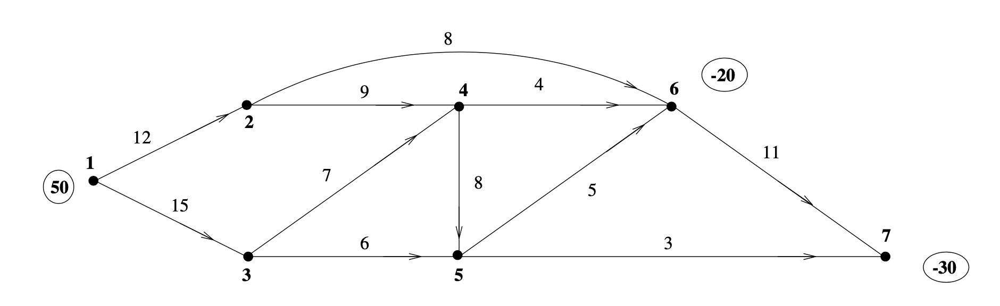
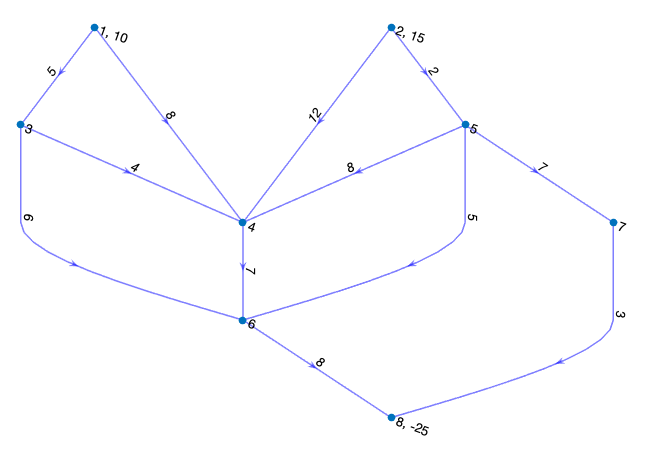
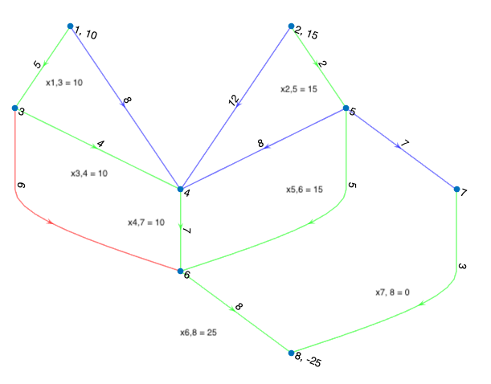
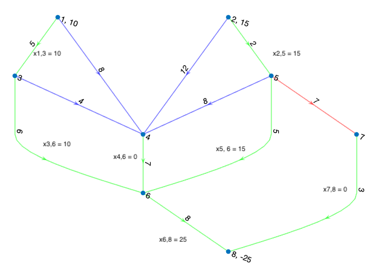

Network problems most naturally arise in the study of optimization and operations research. A typical graph theory student will have seen that finding the maximum flow though a network tells us where our network has a bottleneck in capacity and such a problem naturally arises in applications such as the design of physical networks for road systems and other utilities. Now clearly this single problem does not tell the whole story. For example say you actually have specific amount of total flow which is obviously less than or equal to the maximum, and that you would like to distribute from source to sink in some optimal way. To discuss such problems it is perhaps more intuitive to consider an optimization (specifically linear programming) based approach, rather than a graph theoretic approach.
A graph is defined by a set of vertices and a set of edges, i.e., we define a graph \(G\) like so \(G = (V, E)\), where \(V\) is a set of vertices, and \(E\) is a set of edges. Vertices (also called nodes or points) are simply mathematical abstractions of the objects in our problems. In the context of road systems, a vertex could represent an intersection or a general location. An edge (also called link or line) is simply an ordered pair of vertices, meant to describe the relationship between vertices. Again, in the context of road systems, an edge might represent the street connecting two locations or intersections. An arc (or directed edge) defines a relation between two vertices that is not symmetric, meaning if vertex \(a\) is related to vertex \(b\), it is not guaranteed that vertex \(b\) is related to vertex \(a\). In the context of road systems, one could think of arcs as one-way streets. A path is a sequence of distinct arcs connecting two vertices with no repeated vertices. We say that a graph is connected if, for every pair of vertices, there exists a path connecting them. A cycle is a path that begins and ends at the same vertex. A tree is a graph with no cycles. A subgraph is a graph whose vertex and edge set is a subset of a larger graph, i.e., let \(G = (V, E)\) and \(A = (V', E')\) is a subgraph if \(V' \subseteq V\) and \(E' \subseteq E\). A spanning tree is a subgraph that contains every vertex and is also a tree.
A Linear Programming (LP) Problem is simply an optimization problem where the objective function and constraints are linear. Here is a quick example. Note that it has both equality and inequality constraints,
\[ \begin{align*} \mathop{\text{minimize: }}_{x} z = -x_1 - &2x_2\\ \text{subject to: } -2x_1 + x_2 &= 2\\ -x_1 + x_2 &\leq 3\\ x_1, x_2 &\geq 0 \end{align*} \]
We call the Feasible Set, usually denoted by \(S\), the set of all points for which the constraints are satisfied. Note that for LP problems, this set \(S\) is always convex. Now, as an aside, the term “convex” is overloaded in optimization, and it’s used to describe both a property of the feasible set, where any segment between a pair of points is contained in the set, and the objective function, where for any given point, the function is above its tangent plane. Rest assured for LP problems, our functions and feasible sets are convex, leading to a fundamental result which will be discussed later.
Now we say an LP problem is in standard form if it has only nonnegative inequality constraints, with \(b \geq 0\),
\[ \begin{align*} \mathop{\text{minimize: }}_{x} z &= c^Tx\\ \text{subject to: }Ax &= b\\ x &\geq 0 \end{align*} \]
Take note that in this formulation, \(x, c \in \mathbb{R}^n\) and \(b \in \mathbb{R}^m\), where \(\mathbb{R}^n\) is the solution space, \(m\) is the number of equality constraints, and we have specifically chosen to minimize the objective function. We will often refer to \(A \in \mathbb{R}^{m \times n}\) as the constraint matrix. It is important to note that all LP problems can be converted into standard form, often at the expense of increasing the dimension of the solution space, but we will suppress the details for now as it is not particularly relevant to our discussion of flow problems.
We say a solution \(x\) is a basic feasible solution if the columns of the constraint matrix corresponding to the non-zero components of \(x\) are linearly independent (form a basis, hence ‘basic’), and \(x\) satisfies all equality and nonnegativity constraints (hence ‘feasible’).
Finally, we reach the most important result to remember with the Fundamental Theorem of Linear Programming, which states that for an LP problem in standard form, \(x\) is an extreme point of \(S\) if and only if \(x\) is a basic feasible solution. Furthermore, if an LP problem has a finite optimal solution (which would be guaranteed by convexity if \(S\) is bounded), then the optimal solution is a basic feasible solution.
Now onto duality! For an LP problem in standard form, which we will refer to as the primal problem, we define its dual LP problem as,
\[ \begin{align*} \mathop{\text{maximize: }}_{y} w &= b^Ty\\ \text{subject to: }A^Ty &= c\\ y &\geq 0 \end{align*} \]
Note that in this problem \(b\) and \(c\) have been swapped between the constraint equation and the objective function, \(A\) has been transposed, and we are now maximizing the objective function. There are many ideas to glean from the topic of Duality Theory. For brevity, we will only discuss Strong Duality, which states that for a pair of primal and dual LP problems, if one has an optimal solution, then so does the other, and the optimal objective values are equal. [Hint: This should remind you of max flow = min cut].
All this leads to the main idea of the simplex algorithm, the main workhorse for solving LP problems, which is to find the optimal solution by simply traversing the extreme points of \(S\) and certify that our solution is optimal with the dual. Now, I’ve suppressed many of the details, but hopefully, this is enough to get through our discussion surrounding the different variations of flow problems. Extra discussion of the network simplex algorithm is in the appendix of the paper.
As we will see, there are several different flavors of network problems. A typical graph theory student would be familiar with the maximum-flow problem and its dual, the minimum-cut problem. But we can also formulate the shortest-path problem and the assignment (matching) problem as network problems. To see this, we will be formulating these problems as special forms of the more generalized Minimum Cost Network Flow Problem.
Suppose you have a directed graph (or network) where each vertex is assigned a value of flow, and the weights assigned to the edges represent the cost of moving one unit of flow. Consider the example below, where \(b\) (the circled numbers) is a vector of flow and \(c\) (the numbers near the edges) is a vector of cost values. Assume flow at a vertex is 0 unless stated otherwise.

If a vertex has positive flow, we call it a source, and if a vertex has negative flow, we call it a sink. We define Supply, \(S\) as
\[ S = \sum_{\{i : b_i > 0\}} b_i, \]
and Demand, \(D\) as
\[ D = \sum_{\{i: b_i < 0\}} b_i. \]
We call a network balanced if \(S + D = 0\), and an unbalanced network can be made balanced by adding an artificial vertex with flow \(S - D\) via a directed edge with zero cost.
The goal of the minimum cost network flow problem is to satisfy the supply and demand of each vertex while minimizing the cost. Naturally, the objective function will look like this,
\[ \mathop{\text{minimize: }}_{x} z = c^Tx \]
where \(x_{i,j} \in x\) represents the amount of flow through arc \((i, j)\), and we denote \(c_{i, j}\) as the cost assigned to arc \((i, j)\). It’s important to note that at this moment we are thinking of \(x\) and \(c\) as vectors, so this indexing is just for identifying the corresponding arc, not some location on a matrix. A feasible solution to this problem is an \(x\) which satisfies the supply and demand of each vertex. With that context, at each vertex \(i\), our \(x\) must satisfy,
\[ \sum_{j} x_{i,j} - \sum_{k} x_{k,i} = b_i. \]
One can think of the first sum as flow out of vertex \(i\) and the second sum as flow into vertex \(i\). As an example, consider vertices 1 and 2 in Figure 1; we get the following constraints:
\[ x_{1, 2} + x_{1,3} = 50, \]
\[ x_{2, 4} + x_{2, 6} - x_{1, 2} = 0. \]
This is done for each vertex \(i\), generating our constraint matrix \(A\), which will be of size (number of vertices) \(\times\) (number of edges). Usually, there will be some added constraints \(L\) and \(U\) on the amount of flow that can go through each edge (Capacity!!), so most problems will be of the form,
\[ \begin{align*} \mathop{\text{minimize: }}_{x} z &= c^Tx\\ \text{subject to: }Ax &= b\\ L \leq &x \leq U \end{align*} \]
Consider the well-posedness of such a problem, specifically for a given \(U\) which is small, and an assignment of flows \(b\) which is very large. (This situation has a name, and we typically call an LP problem infeasible when this happens).
Suppose you have a directed graph with \(m\) vertices but in this case, we only consider two special vertices, 1 and \(m\), where 1 is the source and \(m\) is the sink. The weights assigned to each arc represent the maximum capacity of flow that can move between vertices.
The goal of a maximum flow network problem is to maximize the amount of flow through the source and the sink without overwhelming the capacity of the network. So, a solution to the maximum flow network problem determines the maximal amount of flow that can be moved from source to sink, as well as the routing of that flow across the network.
To formulate the problem as a linear program, let \(x_{i, j} \in x\) represent the amount of flow through arc \((i, j)\), and let \(u_{i, j}\) represent the capacity of arc \((i, j)\). Let \(f\) be the amount of flow in the network. Then our problem can be written in the following form:
\[ \begin{align*} \mathop{\text{maximize: }}_{x, f} & \quad z = f\\ \text{subject to: } & \quad \sum_{j} x_{1,j} - \sum_{k} x_{k,1} = f,\\ & \quad \sum_{j} x_{i,j} - \sum_{k} x_{k,i} = 0, \quad i = 2, \dots, m - 1,\\ & \quad \sum_{j} x_{m,j} - \sum_{k} x_{k,m} = -f,\\ & \quad 0 \leq x_{i,j} \leq u_{i,j}. \end{align*} \]
Naturally, since we wish to find the maximum flow \(f\) between vertices 1 and \(m\) through the network, vertex 1 will have a surplus of flow \(f\) and vertex \(m\) will have a demand of flow \(f\). Since all the flow is moving from 1 to \(m\), all vertices in between must be balanced, hence the 0 on the right-hand side of the middle equality constraints. Finally, the inequality constraints come from our desire to not overwhelm the capacity of the network.
We can convert the maximum flow problem into a minimum cost network flow problem. Suppose we add an artificial arc \((m, 1)\) with unlimited capacity \(u_{1, m}\). Then the problem can be reformulated by:
\[ \begin{align*} \mathop{\text{minimize: }}_{x} & \quad z = -x_{m, 1}\\ \text{subject to: } & \quad \sum_{j} x_{i,j} - \sum_{k} x_{k,i} = 0, \quad i = 1, \dots, m,\\ & \quad 0 \leq x_{i,j} \leq u_{i,j}. \end{align*} \]
To see this, let \(x_{m,1} = f\) and by substitution, the constraints are equivalent. Since minimum cost network flow is a minimization problem, we multiply the cost function by -1, hence \(z = -x_{m,1}\). To see this in the previously stated matrix-vector form of the minimum cost network flow problem, let \(b = 0\), let \(c\) be a one-hot vector with \(c_{m,1} = -1\), let \(L = 0\), and let \(U = u\), a vector of arc capacities. Note that the cost \(c_{i,j} = 0\) for all edges in our graph other than our strategically placed artificial arc.
Since we’ve described the maximum flow problem as an LP problem, we can easily convert it to standard form and construct its dual LP problem. From our discussions in class, strong duality states that such a dual should compute the minimum cut on this network. Let’s verify that for ourselves. Since I’ve suppressed the details of how to convert an LP problem to standard form, I’ll simply present you with the dual of the original problem and argue it produces the minimum cut:
\[ \begin{align*} \mathop{\text{minimize: }}_{y, v} & \quad w = \sum u_{i,j} v_{i,j}\\ \text{subject to: } & \quad y_m - y_1 = 1,\\ & \quad y_i - y_j + v_{i,j} \geq 0, \quad \text{for all arcs } (i,j),\\ & \quad v_{i,j} \geq 0. \end{align*} \]
First, let’s define \(N_1\) and \(N_0\) to be the independent sets of vertices. We would like our dual variable \(y_i\) to encode when a vertex is in either \(y_i \in N_1\) or \(y_i \in N_0\). In order to satisfy the first constraint, it is clear that \(y_m = 1\) and \(y_1 = 0\), as desired, since our source and sink must be separated. We interpret the second dual variable \(v_{i,j}\) as an indicator for if an arc is in the cut set, so \(v_{i,j} = 1\) if \(i \in N_1\) and \(j \in N_0\), and \(v_{i,j} = 0\) otherwise. We are pleased to find that the objective is what we expect: minimizing a sum of capacities over arcs in the cut set. Now, finally, if \(y_i \in N_0\) and \(y_j \in N_1\), we force \(y_i - y_j = -1\) and in order to stay feasible, \(v_{i,j} = 1\); hence, we get the desired quality for our indicator \(v_{i,j}\). A similar argument shows that arcs between vertices in the same set can be added to the cut set as well.
The shortest path problem can be represented very simply as a minimum cost network flow problem. First, you construct the directed graph in the obvious way to model the physical network you are trying to traverse. The starting source vertex is ascribed a flow of 1, and the ending sink vertex with a flow of -1, defining the \(c_{i,j}\) as the distance between vertices \(i\) and \(j\).
As an aside, it should be noted that there are several especially efficient algorithms for solving the shortest path problem (A* and Dijkstra’s come to mind), and this formulation via a minimum cost network flow problem is by no means any better (the method in the appendix is a polynomial time algorithm). However, it is more general in the sense that the more popular algorithms require that the cost \(c_{i,j} \geq 0\) and our formulation allows us the case where \(c_{i,j} < 0\) as well. (In fact, it was only recently found that such a negative weight efficient near-linear time shortest path algorithm exists.)
Let’s recall the premise of the stable matching problem, where a collection of medical students are applying to medical residencies and instead of creating a list of preferences, the students decide to ascribe a happiness score \(c_{i,j}\) for which the \(i^{th}\) student would attain should they be accepted to the \(j^{th}\) program. You can think of this as a sort of weighted preference list. The goal of the assignment problem is to assign each student to a program and maximize the total amount of ‘happiness’.
Again, the graph is constructed in the usual way, as a complete bipartite graph with one part representing students and another representing medical residencies (it is necessary to have equal parts). Every student source vertex is ascribed a flow of 1, and every school sink vertex with a flow of -1. We assign the costs as expected using the happiness score \(c_{i,j}\); however, this time we want to maximize the objective function.
Extending our discussion of Flow Problems, I’d like to discuss a particularly interesting application of the Max-Flow/Min-Cut problem in the field of computer vision. Image segmentation is the process by which the subject and background of an image are identified. To apply our knowledge about flow problems, we would hope to define a graph where each vertex represents a pixel or some portion of the image, and capacities, source vertices, and sink vertices such that the Min-Cut separates our subject from the background.
This idea is called ‘Lazy Snapping’ and it works by first presenting a user with an image. The user then selects a small portion of the subject in the image to be source pixels, and another portion of the background to be sink pixels. Then the goal is to find the assignment \(X\) of pixels into two classes where \(X(x_i) = 1\) (subject) or \(X(x_i) = 0\) (background) which minimizes the following energy function:
\[ E(X) = \sum_{i \in V} E_1(x_i) + \lambda \sum_{(i, j) \in E} E_2(x_i, x_j). \]
There is a substantial amount of details which I will suppress, but essentially \(E_1\) is defined in such a way that \(\sum_{i \in V} E_1(x_i)\) is small if pixels of the same class are the same color. Also, \(E_2\) is constructed such that it only takes on positive values for which \(x_i\) and \(x_j\) are in different classes; otherwise, it is zero. It is larger when the two colors are similar and smaller when they are dissimilar. Having described the energy function in this way, there should be a feeling that minimizing \(E\) must separate a subject from its background. Actually producing the capacities for such a graph and proving that the Min-Cut algorithm minimizes this energy function will be left to the references in the demo below,
The crux of the network simplex method lies in two key ideas, which we will explore in the context of a minimum cost network flow problem with only positivity constraints. Let \(G = (V, E)\) be a network on \(m\) vertices and recall the minimum cost network flow problem:
\[ \begin{align*} \mathop{\text{minimize: }}_{x} z &= c^Tx\\ \text{subject to: } Ax &= b\\ x &\geq 0 \end{align*} \]
By our definition of \(x_{i,j} \in x\) as the flow between arc \((i,j)\), we know that the columns of our constraint matrix \(A\) represent the arcs in our network. Since we constructed each row of our matrix \(A\) as an equation which models the flow across a single vertex, we know that each row represents a vertex. So, in the column view, a column representing arc \((i,j)\) will have a 1 in the row representing vertex \(i\) and a -1 in the row representing vertex \(j\). In the row view, a row representing vertex \(i\) will have a 1 in every column representing arc \((i,k)\) and a -1 in every column representing arc \((k,i)\), where \(k \in V\). Hence, the constraint matrix is a directed incidence matrix. The first big idea comes as the following theorem:
Let \(B\) be a submatrix of the constraint matrix \(A\) whose columns represent the edges of a spanning tree. Then \(B\) is a full column rank matrix with dimension \(m \times (m - 1)\), and it can be rearranged so that the diagonal entries are \(\pm 1\).
There is a sense that this result feels intuitive. Clearly, a spanning
tree on a connected graph with \(m\)
vertices must have \(m - 1\) arcs.
Showing that \(B\) can be rearranged
follows by a proof by induction (you can find it on p.285 of Griva).
Recall that a basic solution \(x\) to a general LP problem has non-zero entries, whose corresponding columns in the constraint matrix \(A\) are linearly independent, and \(x\) satisfies the equality constraints. We define a spanning tree solution \(x\) as a solution to the system \(Ax = b\) where the non-zero entries of \(x\) correspond to columns of \(A\) which represent a spanning tree. A feasible spanning tree solution is simply a spanning tree solution which also satisfies the positivity constraints, \(x \geq 0\). The next big idea uses the previous theorem and definitions about spanning trees and connects them to LP:
A flow \(x\) is a basic feasible solution for the network flow constraints \(Ax = b\) and \(x \geq 0\) if and only if it is a feasible spanning tree solution.
The backwards direction follows directly from the previous Theorem 1 and the definition of a feasible spanning tree solution. The forwards direction proceeds by contradiction. Suppose \(x\) is a basic feasible solution and not a feasible spanning tree solution. If \(x\) is not a spanning tree, then it must have a cycle. Choose a vertex \(i\) in the cycle; it must have arcs \((i,j)\) and \((k,i)\) for some \(k\) and \(j\) in the cycle. The flow across an arc \((i,j)\) in the cycle may be increased by some \(\epsilon \geq 0\), and in order to stay feasible, we must decrease the flow across the arc \((k,i)\). So we have a new flow \(x_{\epsilon}\), and we can construct another flow \(x_{-\epsilon}\) by subtracting \(\epsilon\) from the flow across \((i,j)\) and adding \(\epsilon\) to \((k,i)\).
Finally, note that:
\[ x = \frac{1}{2} x_{\epsilon} + \frac{1}{2} x_{-\epsilon}. \]
Therefore, \(x\) is not an extreme point in the feasible set, and by the Fundamental Theorem of Linear Programming, \(x\) is not a basic feasible solution.
The network simplex method proceeds in a similar fashion to the general simplex method with a few improvements on how we compute each step. First, note that we must initialize the algorithm, just like the regular simplex method, with a basic feasible solution. One could conceivably implement the first step problem to find a BFS. Like in the regular simplex method, we’ll need to form our Basis and Null matrices \(B\) and \(N\) respectively. As we have shown in the previous section, our \(B\) matrix will be full column rank with dimension \(m \times (m - 1)\) and the \(N\) matrix will have columns which represent all the arcs that didn’t show up in our feasible spanning tree. Recall that the first step in the simplex method is to compute simplex multipliers \(y\) by solving the system,
\[ B^T y = c. \]
Here is where we can take advantage of Theorem 1 to make solving this system faster. Note that \(B^T\) is a full row rank \((m - 1) \times m\) matrix, so we are guaranteed when solving \(B^T y = c\) to have a free variable. Since \(B^T\) is a matrix whose rows now represent edges, solving this system by back substitution produces the following expression,
\[ y_i - y_j = c_{i,j} \]
where \(y_i\) and \(y_j\) are the simplex multipliers associated with vertices \(i\) and \(j\), and \(c_{i,j}\) is the cost associated with arc \((i,j)\). This means that we can compute the simplex multipliers by selecting a vertex \(i\) to correspond to our free simplex multiplier, so we will let \(y_i = 0\) and compute the rest \(y_j\) by traversing the feasible spanning tree and computing \(y_j = y_i - c_{i,j}\) along the way.
Computing the reduced costs is no different from the regular simplex method. We use \(\hat{c}_{i,j} = c_{i,j} - N^T y\). Again, choosing which arc becomes the new entering arc is no different: simply find the minimum \(\hat{c}_{i,j}\) and consider the corresponding arc \(x_{i,j}\) in the columns of \(N\). Then we check our optimality conditions just as before: are \(\hat{c}_{i,j} \geq 0\).
To choose our leaving arc, we will be taking advantage of Theorem 2 and a small result about spanning trees. Taking our entering arc \(x_{i,j}\) and adding it into our spanning tree graph, it is guaranteed that this will produce a single undirected cycle that includes the arc \(x_{i,j}\). By Theorem 2, adding this arc \(x_{i,j}\) into our solution makes us no longer basic. In order to stay feasible and basic, we must remove an arc from the cycle to get back to a spanning tree and increase the flow through \(x_{i,j}\) an appropriate amount to satisfy our equality constraints. Here’s the trick: locate the edges in the cycle which point in the opposite direction as \(x_{i,j}\); we’ll call them negative edges. Let \(m\) be the minimum flow through those negative edges. Set \(x_{i,j} = m\) and subtract \(m\) from all negative \(x_{l,k}\) in the cycle. This operation maintains basic feasibility since the minimum flow \(x_{l,k}\) arc gets removed from our solution, becoming our exiting variable, and our entering variable is increased enough to satisfy the equality constraints. Also, note that if there is no minimum flow \(x_{l,k}\), and \(x_{i,j}\) can be increased arbitrarily, then the problem is unbounded, just like in the regular simplex method.
The steps are then repeated with the new feasible spanning tree solution until we achieve the optimality conditions.
Consider the example defined in Figure 2, of a positively constrained minimum cost network flow problem.


Our initial feasible spanning tree solution is outlined in green in Figure 3. Again, the equations for computing the simplex multipliers allow us to simply set the multiplier associated with vertex 1 to zero, so we get \(y_1 = 0\). To solve the next multiplier, we traverse the green spanning tree to vertex 3 and in doing so we solve for \(y_3\) with \(y_3 = y_2 - c_{1,3} = 0 - 5 = -5\). Solving the next multiplier, we get \(y_4 = y_3 - c_{3,4} = -5 - 4 = -9\) and so on.
Once we have the simplex multipliers together, we can solve for the reduced costs of the non-basic arcs. Doing so, we can check our optimality conditions, and in this case, there exist negative reduced costs, so we continue. You’ll find that the reduced cost for \(x_{3,6}\) (marked in red in Figure 3) is the lowest among the negative reduced costs and therefore becomes our entering arc.
To solve for our exiting arc, consider the cycle formed by vertices \(\{3, 4, 6\}\). Note that \(x_{3,6}\) is pointing in the counterclockwise direction, and therefore we designate arcs \(x_{3,4}\) and \(x_{4,6}\) as negative. Note that the minimum flow across the negative arcs is equal, so when we subtract that flow from \(x_{3,4}\) and \(x_{4,6}\) and add it to \(x_{3,6}\), both \(x_{3,4}\) and \(x_{4,6}\) will be zero and we will get to choose which of the two arcs becomes our exiting arc.
Choosing \(x_{3,4}\) to be the exiting arc and setting \(x_{3,6} = 10\), we arrive at the next feasible spanning tree solution. Figure 4 shows the final iteration of this problem; the working out is left as an exercise to the reader.

You’ll find code and an example for running this method on positively constrained minimum cost flow network problems on my GitHub page.